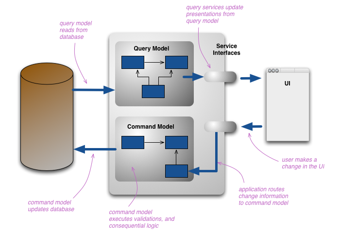
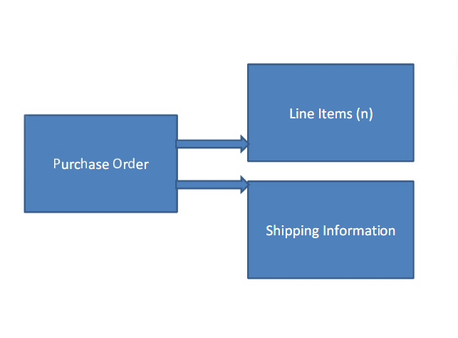
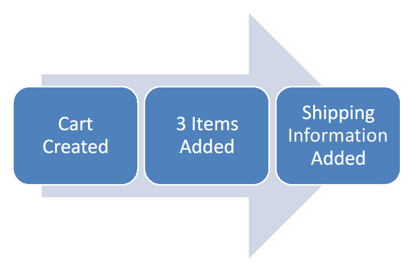
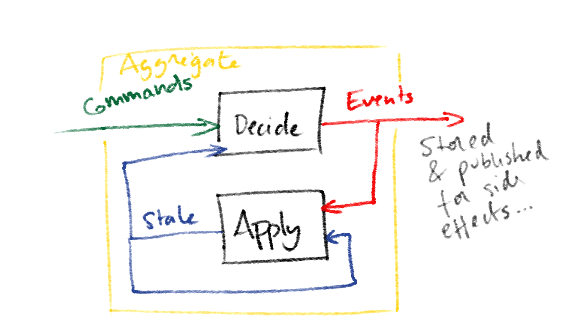
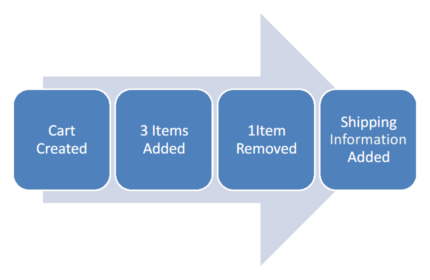
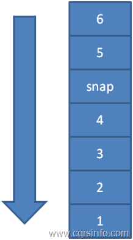
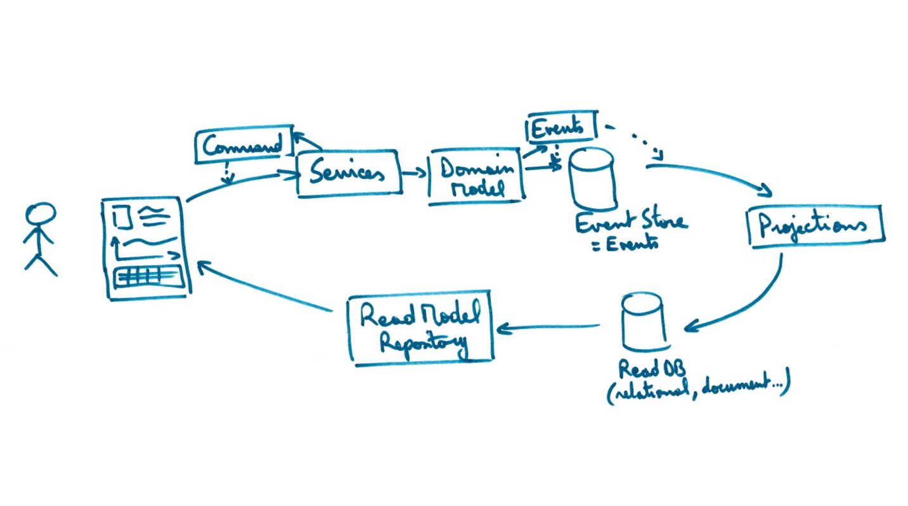
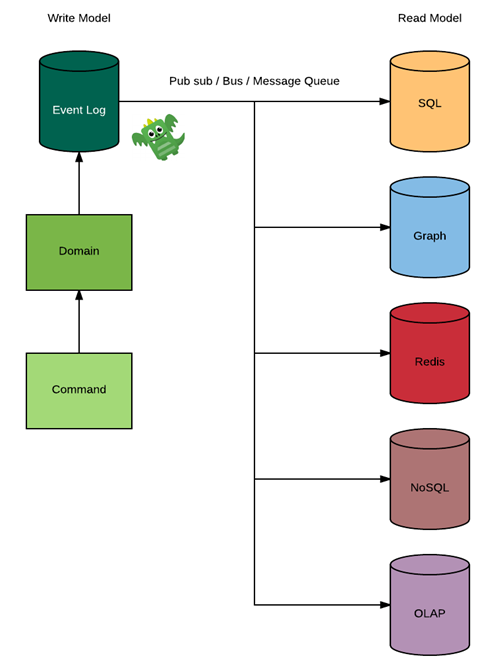

1: 2: 3: |
|
Contre exemple : Stack.Pop()
Command Query Responsibility Segregation
1: 2: 3: 4: 5: 6: 7: 8: 9: 10: 11: 12: 13: 14: 15: 16: |
|

State transsitions are an important part of our problem space and should be modeled within our domain
Ce coté ensemble de transactions est applicable a toute sorte de business
1: 2: 3: 4: 5: 6: 7: 8: |
|







Most Bounded Contexts can interact withrelaxed consistency.
@anthyme
anthyme@gmail.com